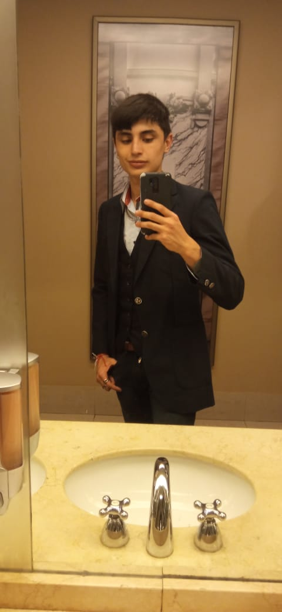

<section id="about-me">
  <div class="about-me-row">
    <div class="about-me-img-grid">
      
    </div>
    <div class="" data-aos="fade-up">
      <h3 class="display-4 mb-4 border-bottom border-2 border-warning">
        ¿Quién soy?
      </h3>

      <h4 class="mb-3">Valentino (Haizara) Ceniceros</h4>
      <p>
        Tengo 22 años, soy Técnico en Informática, estudiante de Ingeniería
        Informática y desarrollador web full-stack. Ingresé al mundo del
        laboral de las IT en 2021 y hasta la fecha he creado 4 páginas web, además
        de colaborar en modificaciones y mejoras para 8 proyectos de diversos
        sectores.
      </p>
      <p>
        He trabajado con diversos tipos de clientes, desde pequeñas startups
        hasta ONGs y medianas empresas, lo que me ha permitido adaptarme a las
        variadas necesidades que pueden tener mis potenciales clientes.
      </p>
      <p>
        Soy un apasionado de la informática, por lo que busco la excelencia y
        eficiencia en todos mis proyectos, optimizando los recursos para mis
        clientes y contribuyendo así a la mejora y perfeccionamiento de mis
        habilidades.
      </p>
      <p>
        Me destaco por mi capacidad de adaptación y mi enfoque orientado a
        resultados. Estoy convencido de que mi pasión y experiencia en el
        desarrollo web pueden ser un activo valioso para su equipo.
      </p>
    </div>
  </div>
</section>
